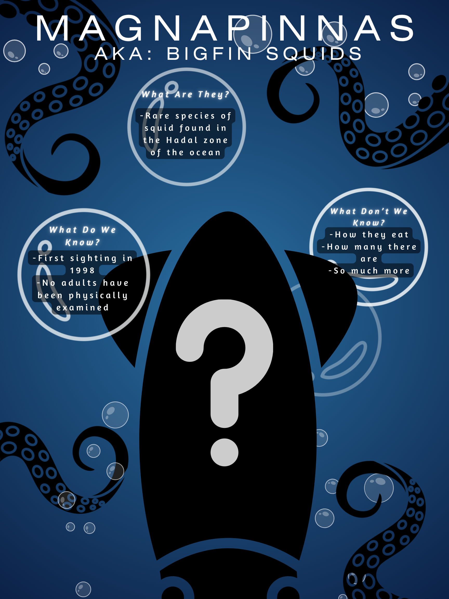
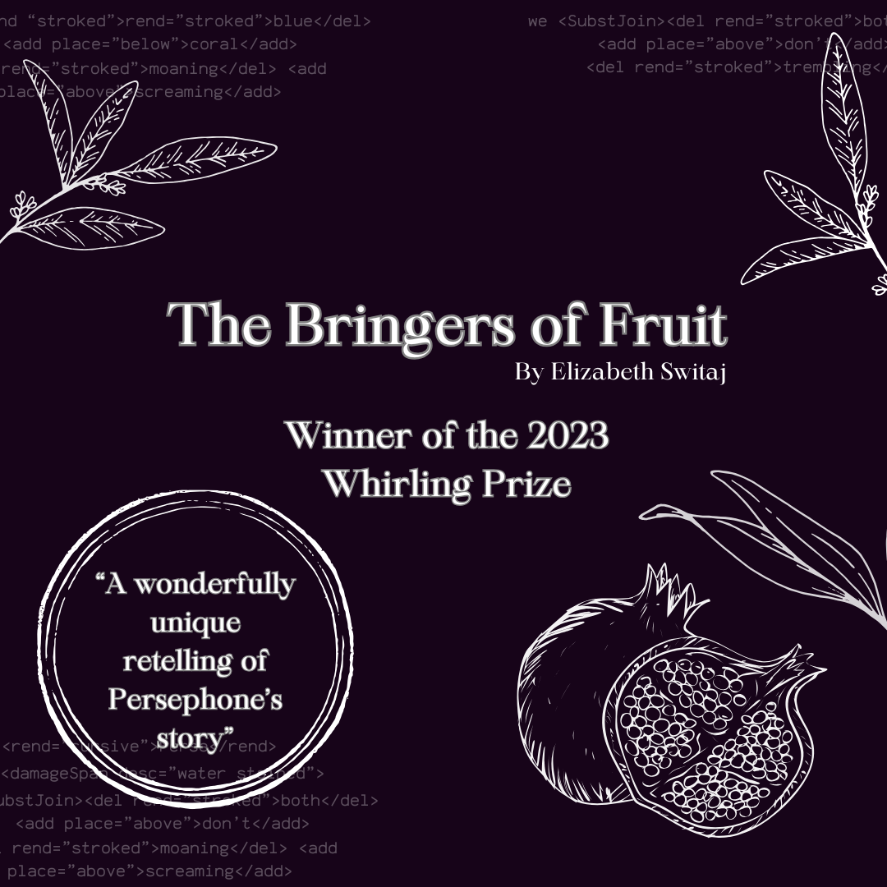

Visual Media Portfolio
This page highlights original and revised visual media. Each project shows how I developed my ideas through composition, color, and presentation. Reflections explain the choices made in revision.
Kellogg Writer Series Passport
Original
Revised
Reflection
In this project, the revisions focused on composition and color balance. By adjusting contrast, spacing, and visual hierarchy, I improved readability and drew attention to key elements. These changes reflect Gagich’s emphasis on clarity and structured multimodal composition (Gagich, 2020), and Chien’s guidance on using design to enhance viewer engagement (Chien, 2024).
Infographic Poster
Original
Revised

Reflection
The revision emphasized visual hierarchy and focus. I simplified elements and adjusted framing, creating a stronger narrative through visual cues. This approach aligns with Yancey’s (n.d.) guidance on preserving voice while enhancing audience engagement in multimodal works.
Whirling Prize Promotional Material
Original
Revised

Reflection
In this piece, the revision focused on enhancing contrast and clarity. Small adjustments in color and layout made the composition more dynamic, while maintaining the original concept. These refinements demonstrate growth in visual literacy and creative problem-solving (Chien, 2024; Gagich, 2020).